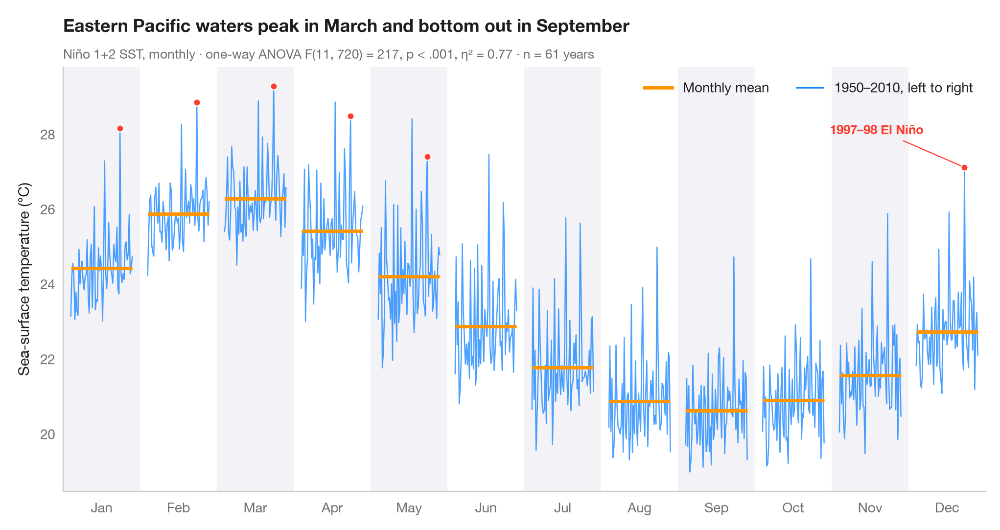

Graphique des sous-séries saisonnières
Les ventes manufacturières de chaque mois de l'année au fil des ans, avec la moyenne mensuelle.

Un graphique des sous-séries saisonnières (ou month plot) découpe une série mensuelle en douze mini-séries chronologiques, une par mois de l'année, chacune couvrant toutes les années. La barre horizontale est la moyenne de ce mois : la forme de la saison se lit donc d'une barre à l'autre, tandis que la ligne au sein de chaque panneau montre si ce mois dérive ou oscille d'une année à l'autre.
Le contexte est celui de Warin (2024, Technology Innovations in Statistics Education), sur l'utilisation des données économiques ouvertes de Statistique Canada dans les cours de statistique, où les ventes mensuelles du secteur manufacturier sont une série d'enseignement typique. Les données sont ici simulées à titre d'illustration et ne sont pas les chiffres de Statistique Canada : une série semblable aux ventes manufacturières, en milliards de dollars, de janvier 2005 à décembre 2023 (228 mois), construite à partir d'une tendance avec deux creux (2009 et printemps 2020), d'un profil mensuel fixe et d'un bruit. La même série simulée sert aux exemples STL, SARIMA et sous-séries saisonnières. Le sous-titre rapporte une ANOVA à un facteur des ventes selon le mois (scipy.stats.f_oneway) avec η², la part de la variation totale expliquée par la saison ; la tendance de long terme au sein de chaque panneau explique une grande partie du reste. Le creux de 2020 est mis en évidence.
Le code et le texte à l'intérieur des figures sont en anglais.
import matplotlib.pyplot as plt
import numpy as np
import pandas as pd
from scipy import stats
# Simulated data, set in the context of Warin (2024) [warin2024statcan]
# Data: simulated monthly manufacturing sales, billions of dollars, 2005–2023 (shared generator)
rng = np.random.default_rng(2024)
idx = pd.date_range("2005-01-01", "2023-12-01", freq="MS")
t = np.arange(len(idx))
trend = 48 + 0.06 * t - 7 * np.exp(-((t - 54) / 9) ** 2) - 8 * np.exp(-((t - 183) / 2.5) ** 2)
season = np.tile([-3.0, -0.8, 2.6, 0.6, 1.2, 2.2, -3.4, -1.2, 1.6, 2.0, 0.4, -2.2], len(idx) // 12)
sales = pd.Series(trend + season + rng.normal(0, 0.7, len(idx)), index=idx)
# One row per year, one column per month
years = sales.index.year.unique().to_numpy()
months = sales.index[:12].strftime("%b")
values = sales.to_numpy().reshape(len(years), 12)
# Seasonal effect: one-way ANOVA of sales on month, with eta squared
F, p = stats.f_oneway(*values.T)
eta2 = ((values.mean(0) - values.mean()) ** 2).sum() * len(years) / ((values - values.mean()) ** 2).sum()
fig, ax = plt.subplots(figsize=(10, 5.2))
width = 0.8
x_in = (years - years.min()) / (years.max() - years.min()) * width - width / 2
highlight = {2020: list(months)}
# One mini series per month, plus its mean
for i, m in enumerate(months):
v = values[:, i]
if i % 2 == 0:
ax.axvspan(i - 0.5, i + 0.5, color="#F2F2F7", lw=0, zorder=0)
ax.plot(i + x_in, v, color="#007AFF", lw=0.9, alpha=0.7)
ax.hlines(v.mean(), i - width / 2, i + width / 2, color="#FF9500", lw=2.5, zorder=3)
for yr, ms in highlight.items():
if m in ms:
j = np.where(years == yr)[0][0]
ax.scatter(i + x_in[j], v[j], s=26, color="#FF3B30", edgecolor="white", lw=0.8, zorder=4)
ax.set_xticks(range(12), months)
ax.set_xlim(-0.5, 11.5)
ax.grid(axis="y")
ax.set_ylabel("Manufacturing sales (billions of dollars)")
ax.plot([], [], color="#FF9500", lw=2.5, label="Monthly mean")
ax.plot([], [], color="#007AFF", lw=1, label=f"{years.min()}–{years.max()}, left to right")
ax.scatter([], [], s=26, color="#FF3B30", label="2020 (spring slump)")
ax.legend(loc="upper left", ncols=3)
ax.set_ylim(top=values.max() + 6)
lo_m = sales.index[values.mean(0).argmin()].strftime("%B") # first year runs Jan–Dec
hi_m = sales.index[values.mean(0).argmax()].strftime("%B")
p_txt = "p < .001" if p < 0.001 else f"p = {p:.3f}"
ax.set_title(f"Manufacturing sales bottom out in {lo_m} and peak in {hi_m}", pad=26)
ax.text(0, 1.02, f"Monthly, billions of dollars (simulated) · one-way ANOVA F(11, {values.size - 12}) = {F:.1f}, "
f"{p_txt}, η² = {eta2:.2f} · n = {len(years)} years",
transform=ax.transAxes, fontsize=9.5, color="#6E6E73")
plt.show()
Les figures utilisent le style PyStatlas (facultatif) : ajoutez plt.style.use("pystatlas.mplstyle") pour obtenir exactement le même rendu.
Source des données
- Simulated data. Simulated data with a fixed random seed, created for this example.
No real respondents, documents or measurements: the numbers only illustrate how the chart and its statistics work. - Warin (2024), Statistics Canada's open economic data for teaching. Warin, T. (2024). Access Statistics Canada's open economic data for statistics and data science courses. Technology Innovations in Statistics Education, 15(1). https://doi.org/10.5070/t5.1868
The example is set in the context of this paper; unless its description says otherwise, the numbers are simulated and are not Statistics Canada's figures.
Les exemples illustrent des méthodes statistiques. Leurs chiffres sont simulés, sauf mention contraire dans l'entrée, et leurs titres décrivent ce que chaque figure montre dans ces données simulées — ni les résultats des articles cités, ni la position de l'auteur sur la question de fond. Pour les résultats, le contexte et les données, reportez-vous aux articles cités ici.
Comment citer
PyStatlas est créé et maintenu par Thierry Warin. S'il vous a été utile dans vos travaux, merci de le citer.
Warin, T. (2026). Seasonal subseries plot. In PyStatlas: A Python Gallery of Statistical Graphics for the Social Sciences. https://warint.github.io/pystatlas/time-series/seasonal-subseries/
@misc{warin2026statlas,
author = {Warin, Thierry},
title = {PyStatlas: A Python Gallery of Statistical Graphics for the Social Sciences},
year = {2026},
howpublished = {\url{https://warint.github.io/pystatlas/}},
note = {Source code: https://github.com/warint/pystatlas}
}Plus dans Séries chronologiques

Décomposition STL
Ventes mensuelles du secteur manufacturier décomposées en tendance, saisonnalité et résidu.
feasts::STL() + autoplot()
ACF et PACF
ACF et PACF d'un écart de taux souverain mensuel par rapport au Bund, avec bandes de significativité à 95 %.
forecast::ggtsdisplay()
Prévision SARIMA
Prévision ARIMA saisonnière des ventes manufacturières mensuelles, avec intervalles à 80 % et 95 % face aux données mises de côté.
forecast::autoplot(forecast())